Además , hay una cosa que tiene esta casita y que no se puede trasladal : el - fleivor - ( el sabor ).
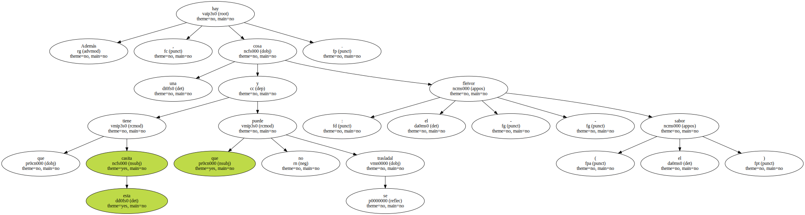Estaban al solecito , haciendo crochet , con las páginas de una revista de corte y confección en el bolso y las piernas , ay , varices , sobre cajas de refrescos.
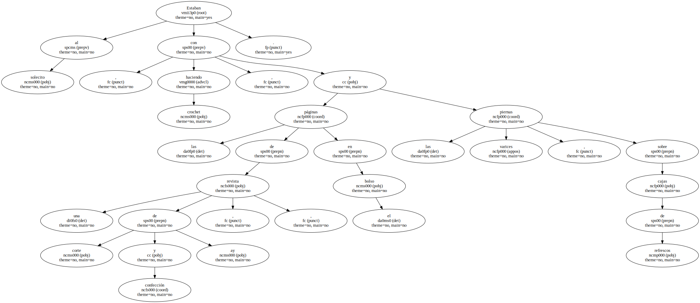Eran las mujeres de Marinaleda , que riman con Mariana Pineda aunque ellas no lo sepan.
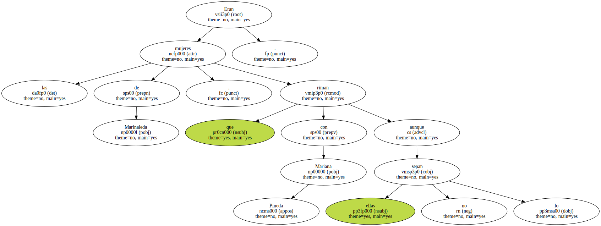A la una de la tarde , hacía calor en este pueblo de poco más de 2.000 habitantes , pueblo famoso , como aquel de Zalamea donde también hubo un alcalde.
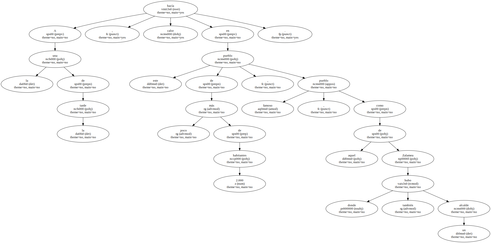Para huelgas de hambre y hambre de huelgas , Marinaleda.
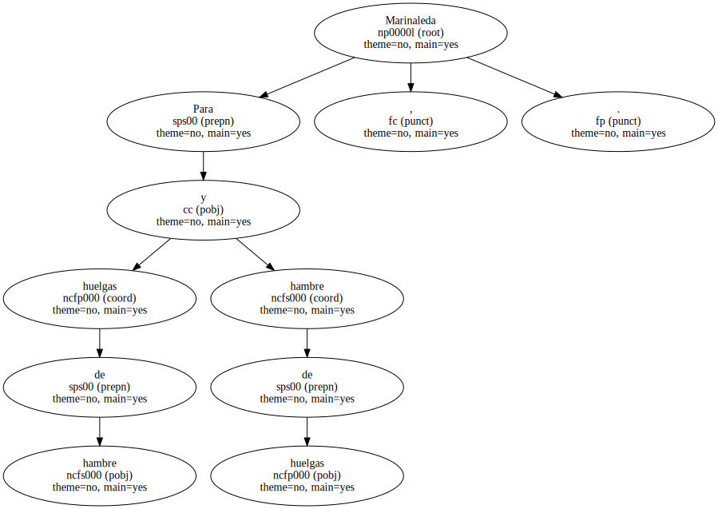- Como la cosa no se arregle , ya veremos si no hacemos otra - , profetizaba Antonia Ramos con su mirada de coser.
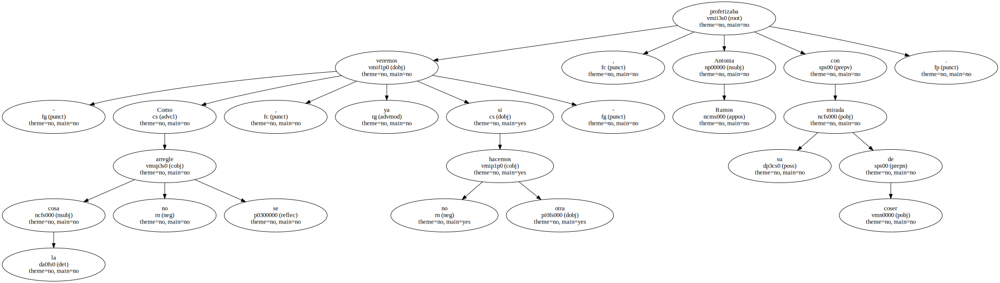- Estamos aquí desde el Miércoles Santo - , decía Carmen Sánchez , cuatro hijos , haciendo un pañito de encaje para ponerlo sobre los brazos del tresillo.
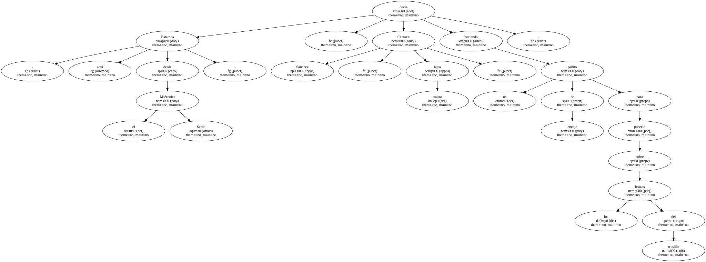- A ver , qué vamos a hacer aquí , no hay que perder el tiempo -.
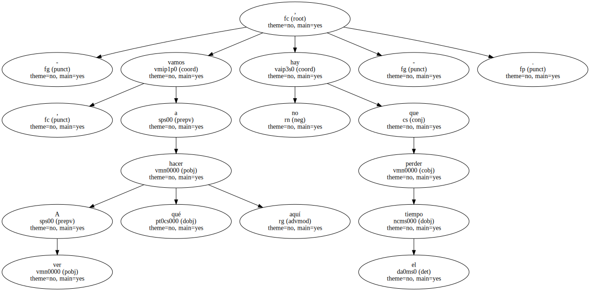Bueno está.
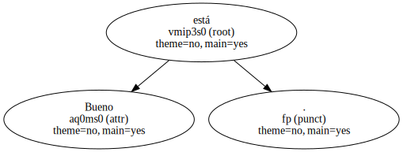En sillas de tubos de metal , rojas como la conciencia de los sindicalistas , un grupo de mujeres , como cuarenta o cincuenta.
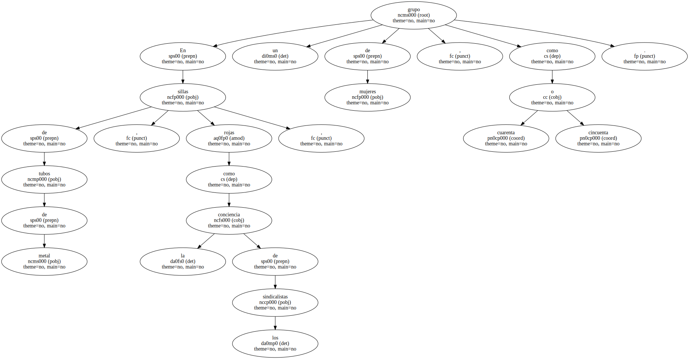Unas , jugando a las cartas.
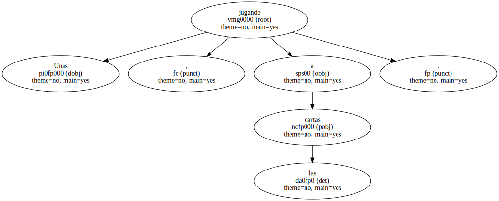Otras , charloteando.
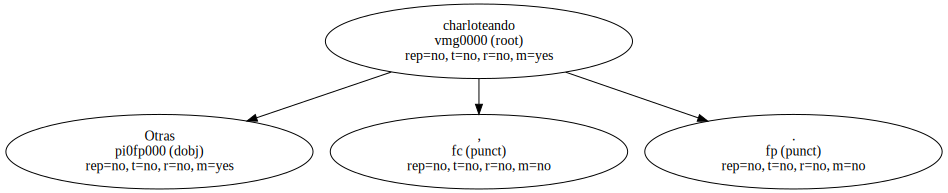Todas , inspeccionando con curiosidad a los intrusos del bolígrafo y la cámara.
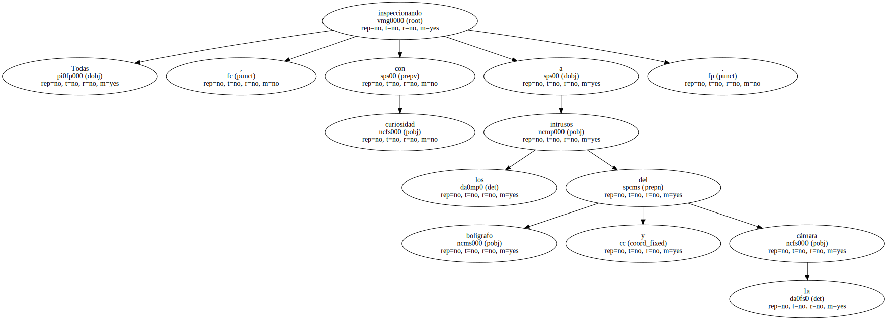Dentro del local del Sindicato de Obreros del Campo , donde se predica un cierto cristianismo , un anarquismo herético , un confuso utopismo y una sana honradez , ingenua e incontaminada , casi medio centenar de jornaleros enjuagaban su futuro en la cerveza rubia del mediodía o el tinto de verano prólogo del almuerzo.